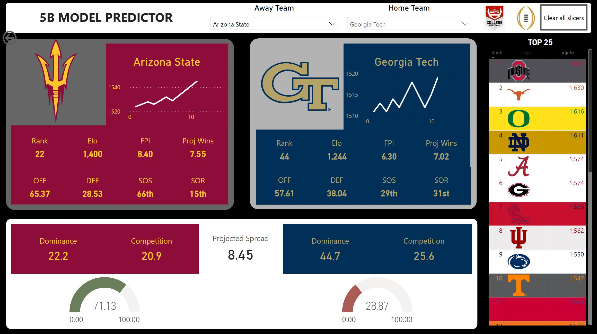
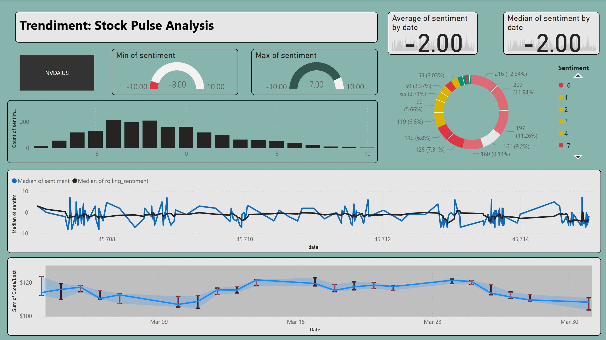
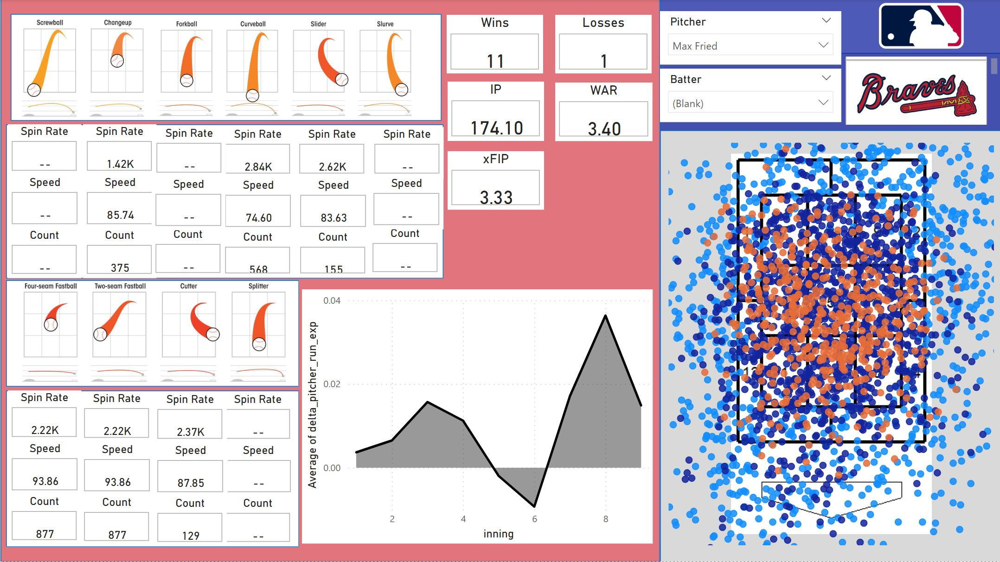
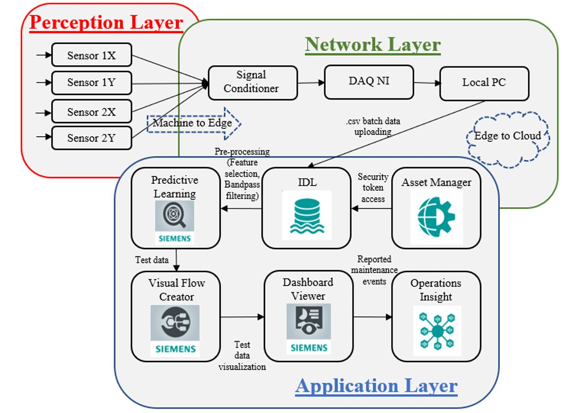
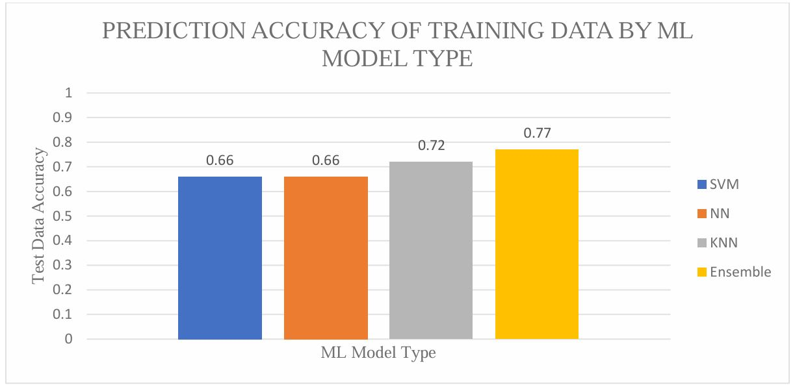

I'm a Data Scientist specializing in cloud-based ML pipelines, IoT analytics, and Bayesian modeling. Explore below for interactive visualizations of my experience and skills.
Predicts college football matchups vs Vegas using ensemble ML regression. Achieved 65% success against the Vegas model for 2024-25 season.
Fine-tuned BERT models for sentiment analysis of stocks with API data collection, visualized in Power BI.
Bayesian hierarchical model predicting season-long fantasy baseball rankings, integrating traditional & advanced metrics, automated ETL, and interactive player comparisons in Power BI.
Design of an Interactive Generalized Testbed for Continuous Data Collection and Reduced Maintenance Downtime – View Publication
Advancing Architectural Frameworks for Vibration Signature Classification in Rotating Machinery – View Publication
